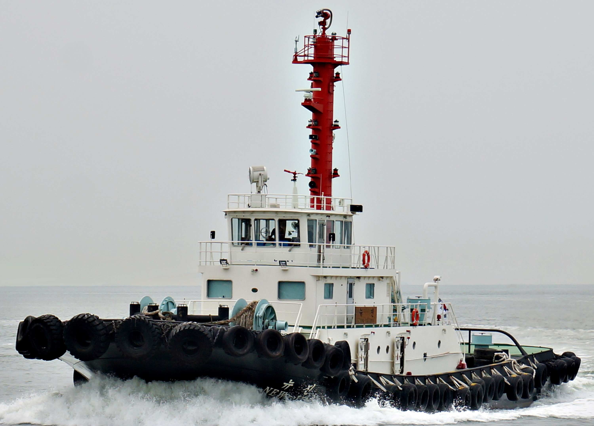

5,200 BHP 307 GRT Harbor Tug Blt 2013 Kr
/ informed by BLUE MARINE CO., LTD.
(18-672)

- TYPE : TUG BOAT
- BUILT : 09.MAY.2013 GEUMGANG SHIPBUILDING CO.,LTD.
- FLAG/CLASS : KOREA / KR, +KRS0C | TUG BOAT | +KRM0C
- LOA/L/B/D : 38.30 / 35.53 X 10.00 X 4.50 m
- DWT/draft : 230 / 3.512 m
- GRT : 307 (LOCAL)
- MAIN ENGINE : YANMAR, 6EY26W, 2set X 1920kw X 750.0 rpm (TTL. 5,200 BHP)
- GENERATOR : AD086TI, 2set X 168kw (According to Class KR, 2 AC 213KVA 225VOLT)
- SPEED : 14.50kt
- PROPULSION : SCHOTTEL RUDDER PROPELLER SRP1215FP
- BOLLARD PULL : 59 ton
- ELECTRO HYD. WINDLASS : BRAKE CAPA. 100ton X 2set TOWING WINCH
/ YOONWON M-TECH CO., LTD
- FIRE FIGHTING SYSTEM : DEP150/3S, 126ps X 1800rpm, 2000ℓ/min X 100m
- CREW COMPLEMENT : 6P
- TANK CAPA. : FO (0.3% B-A OIL) 124.8 / FW 39.30m³
- LAST/NEXT SS : 09 MAY 2018 / 08 MAY 2023
Information History
- 180828 : She is available for sale.